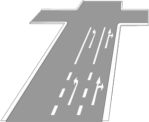

Zeichen 297
Pfeilmarkierungen

20 Tatbestände dazu
105642Sie überholten, obwohl Sie nicht übersehen konnten, dass während des gesamten Überholvorgangs jede Behinderung des Gegenverkehrs ausgeschlossen war. Sie folgten nicht der durch Pfeile vorgeschriebenen Fahrtrichtung (Zeichen 297).
150 €1 PunktA-Verstoß
105643
Sie überholten, obwohl Sie nicht übersehen konnten, dass während des gesamten Überholvorgangs jede Behinderung des Gegenverkehrs ausgeschlossen war. Sie folgten nicht der durch Pfeile vorgegebenen Fahrtrichtung (Zeichen 297) und gefährdeten +) dadurch Andere.
250 €2 PunkteFahrverbot 1 Monat(e)A-Verstoß
105644
Sie überholten, obwohl Sie nicht übersehen konnten, dass während des gesamten Überholvorgangs jede Behinderung des Gegenverkehrs ausgeschlossen war. Sie folgten nicht der durch Pfeile vorgegebenen Fahrtrichtung (Zeichen 297). Es kam zum Unfall.
300 €2 PunkteFahrverbot 1 Monat(e)A-Verstoß
105648
Sie überholten bei unklarer Verkehrslage und folgten nicht der durch Pfeile vorgeschriebenen Fahrtrichtung (Zeichen 297).
150 €1 PunktA-Verstoß
105649
Sie überholten bei unklarer Verkehrslage und folgten nicht der durch Pfeile vorgeschriebenen Fahrtrichtung (Zeichen 297). Sie gefährdeten +) dadurch Andere.
250 €2 PunkteFahrverbot 1 Monat(e)A-Verstoß
105650
Sie überholten bei unklarer Verkehrslage und folgten nicht der durch Pfeile vorgeschriebenen Fahrtrichtung (Zeichen 297). Es kam zum Unfall.
300 €2 PunkteFahrverbot 1 Monat(e)A-Verstoß
141251
Sie folgten nicht der durch Pfeile vorgeschriebenen Fahrtrichtung (Zeichen 297).
10 €
141252
Sie folgten nicht der durch Pfeile vorgeschriebenen Fahrtrichtung (Zeichen 297). Es kam zum Unfall.
35 €
141262
Sie folgten beim Überholen nicht der durch Pfeile vorgeschriebenen Fahrtrichtung (Zeichen 297).
30 €
141271
Sie folgten beim Linksabbiegen nicht der durch Pfeile vorgeschriebenen Fahrtrichtung (Zeichen 297).
30 €
141272
Sie folgten beim Linksabbiegen nicht der durch Pfeile vorgeschriebenen Fahrtrichtung (Zeichen 297) und gefährdeten +) dadurch Andere.
35 €
141280
Sie folgten beim Wenden nicht der durch Pfeile vorgeschriebenen Fahrtrichtung (Zeichen 297).
30 €
141281
Sie folgten beim Wenden nicht der durch Pfeile vorgeschriebenen Fahrtrichtung (Zeichen 297) und gefährdeten +) dadurch Andere.
35 €
141340
Sie hielten auf einem durch Richtungspfeile (Zeichen 297) gekennzeichneten Fahrbahnteil.
20 €
141341
Sie hielten auf einem durch Richtungspfeile (Zeichen 297) gekennzeichneten Fahrbahnteil und behinderten +) dadurch Andere.
35 €
141342
Sie parkten auf einem durch Richtungspfeile (Zeichen 297) gekennzeichneten Fahrbahnteil.
25 €
141343
Sie parkten auf einem durch Richtungspfeile (Zeichen 297) gekennzeichneten Fahrbahnteil und behinderten +) dadurch Andere.
40 €
141344
Sie parkten länger als 1 Stunde auf einem durch Richtungspfeile (Zeichen 297) gekennzeichneten Fahrbahnteil.
40 €
141345
Sie parkten länger als 1 Stunde auf einem durch Richtungspfeile (Zeichen 297) gekennzeichneten Fahrbahnteil und behinderten +) dadurch Andere.
50 €
141503
Sie folgten beim Linksabbiegen nicht der durch Pfeile vorgeschriebenen Fahrtrichtung (Zeichen 297). Es kam zum Unfall.
40 €